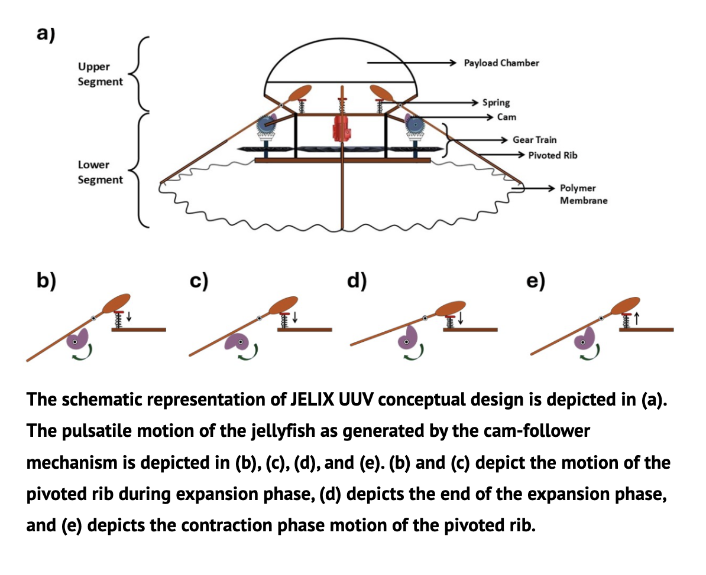
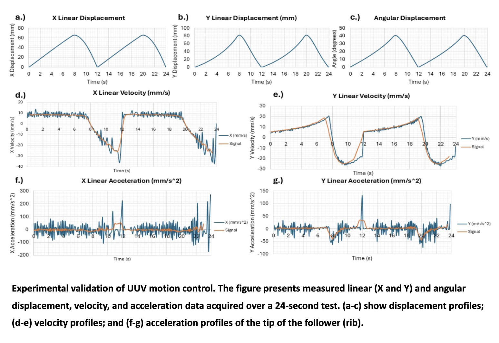
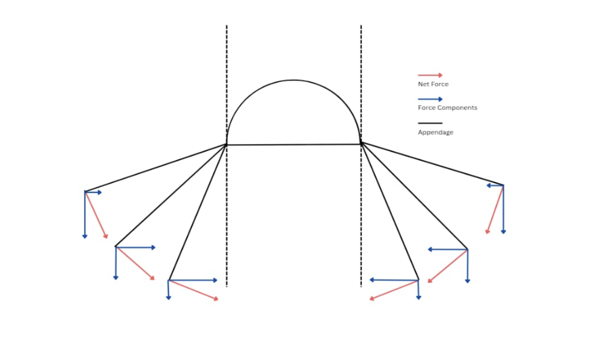

Problem
Jellyfish move by pulsing: they contract their bell to push out a jet of water, then relax. I wanted to know whether a simple mechanical linkage could reproduce that pulse well enough to propel a small underwater vehicle, as an alternative to a propeller.
Constraints
- Low electrical complexity: one motor, no smart materials.
- Easy to manufacture and scale; modular segments.
- Fast contraction with a slow recovery, since the thrust comes from the contraction stroke.
My role
Everything on this page was my own work: concept, mechanism design, CAD, simulation and the force model. Theja K V at Genex Space supervised, and I wrote the work up as a research paper submitted to Genex.
Design
The vehicle has an upper buoyancy segment and a lower propulsion segment. A motor turns a cam through a gear train. Each rib is a pivoted follower riding on the cam.
- Expansion phase: the cam slowly raises the ribs and compresses the springs, storing energy.
- Contraction phase: the cam profile drops suddenly, the springs release, and the ribs snap back and push a jet of water out.

Why a cam instead of smart materials?
Shape-memory alloys and other smart materials can mimic a bell, but they need higher voltages and more complex control. A cam gives a repeatable, tunable motion from one motor, and it's easier to build and maintain in the field.
Analysis
- Designed the cam profile in CATIA V5, defining follower displacement at 10° increments of cam rotation.
- Exported the geometry to MSC ADAMS and ran a multibody simulation at a 5 rpm input over 24 s (two full cycles).
- Measured the rib tip's linear (X, Y) and angular displacement, velocity and acceleration.
| Max X displacement (rib tip) | ≈ 65 mm |
| Max Y displacement (rib tip) | ≈ 80 mm |
| Angular stroke | 0° – 40° |
| Cycle period | ≈ 12 s (5 rpm input) |

Free-body force model
I modeled the net force normal to each rib and split it into horizontal (Fx) and vertical (Fy) components across the stroke. Fy is the component that produces thrust, so the rib angle during the fast contraction sets how much of each stroke becomes forward push.

Build & test
Result
The simulation confirmed that the cam produces the intended slow-expand, fast-contract motion: a 0–40° rib stroke with about 80 mm of tip travel, repeating every 12 s. It also showed what the model leaves out: spring dynamics and the water itself.
What I'd change
- Model the return springs instead of relying on gravity. That removes the simulation noise and lets me size the springs properly.
- Add hydrodynamics (CFD, or a simple jet-impulse estimate) to predict thrust per stroke.
- Print a one-rib benchtop rig and compare its measured motion against the ADAMS results.